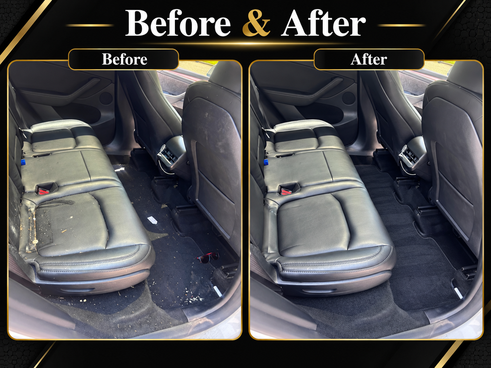

Our Detailing Services
Watkins Bros Detailing provides fully mobile auto detailing throughout the DMV area. We come to you and help restore your vehicle's clean, polished, showroom appearance.
Interior Detail
Includes vacuuming, carpet and floor mat cleaning, dashboard and console wipe down, interior windows, leather conditioning, steam cleaning, odor treatment, and more.
Car: $130 | SUV / Van / Truck: $160
Exterior Detail
Includes foam pre-rinse, hand wash, wheel and tire cleaning, bug and road grime removal, tire shine, exterior windows, spray wax protection, and paint sealant.
Car: $130 | SUV / Van / Truck: $160
Full Detail Package
Our full detail combines interior and exterior detailing with deeper cleaning services for customers who want a complete vehicle refresh.
Car: $160 | SUV / Van / Truck: $230
Before & After Detailing Results

How Our Mobile Detailing Works
Booking is simple. Choose the detailing service that fits your vehicle, schedule an appointment, and we bring the detail shop directly to you.
We inspect the vehicle, complete the selected interior and exterior services, and perform a final quality check before the job is finished.
Our Mobile Detailing Process
- Choose your preferred detailing package.
- Schedule a convenient appointment.
- Prepare your vehicle for the detailer.
- Receive professional interior or exterior cleaning.
- Review the completed service with your detailer.
Keep Your Car Looking Its Best
Regular detailing helps protect your vehicle's interior and exterior while keeping it clean and comfortable. Vacuum frequently, clean spills quickly, wash away road grime, and use protective products on paint and interior surfaces.
For deeper cleaning, stain removal, pet hair removal, mold removal, or paint correction, professional detailing can help restore your vehicle's appearance.
For more vehicle care information, visit watkins bros detailing on Instagram .